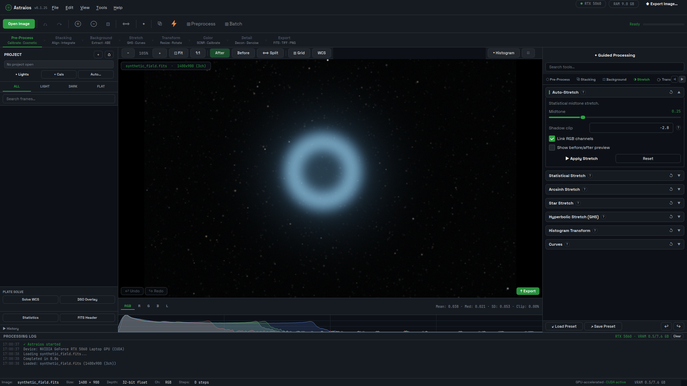

Built in, not bolted on
Spatially varying and multi-frame deconvolution, AI denoise with a bundled model, star removal and photometric colour calibration are part of the program, not paid plugins.
Free and open source · Windows, Linux, macOS · alpha
Astraios is a free, open-source desktop application for calibrating, registering, stacking and processing deep-sky, planetary and solar astrophotography on Windows, Linux and macOS. Supported operations use NVIDIA CUDA or Apple Metal acceleration with automatic CPU fallback. Image processing and AI inference run locally; explicitly selected online integrations such as astrometry.net transmit only the data that service needs. Astraios is currently alpha software.

Spatially varying and multi-frame deconvolution, AI denoise with a bundled model, star removal and photometric colour calibration are part of the program, not paid plugins.
Every frame's transform is checked before it is accepted; frames that cannot be registered are left out rather than stacked unaligned, and registration padding never darkens the edges.
Aperture photometry, exoplanet transit light curves, transient detection, isophote fitting and an offline minor-body catalog.
Every operation is recorded, can be toggled, reordered or re-edited, and exported as a macro or run from the Python console.
Answers to the common ones (is it free, does it need an NVIDIA card, does it upload images, is it production ready) are on the FAQ. Documentation lives in the repository: getting started, workflow, features, tools reference and the project facts every page here is checked against.